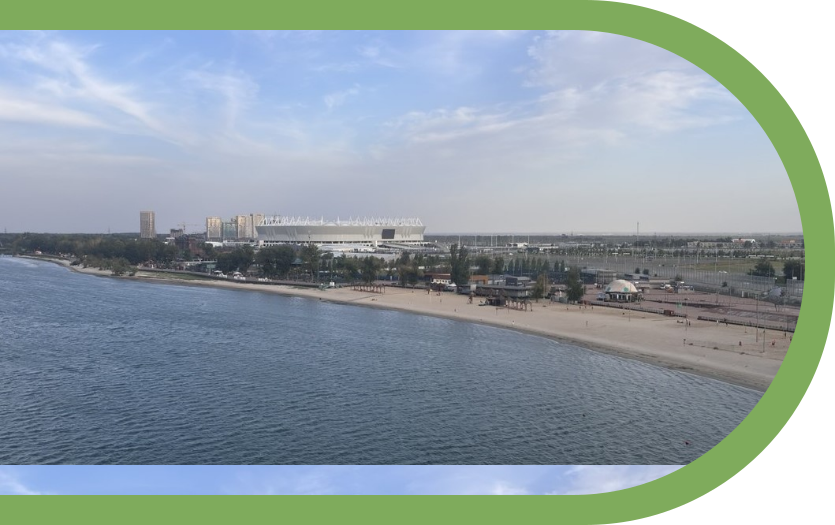

01
Центральный пляж - благодаря своему положению получил звучное название «Левбердон». Полоса из мягкого золотистого песка протянулась на километр вдоль левого берега Дона и парка Левобережный, недалеко от Ворошиловского моста. Для отдыха на берегу пляж официально разрешен и частично оборудован.

02
«Ростов Арена» - крупнейший спортивный объект в Ростовской области и входит в тройку самых посещаемых стадионов России.. За последнее время он стал культовым местом в регионе, собирающим жителей разных социальных групп населения. Белоснежная кровля на фоне величественной реки на эскизном проекте выглядит впечатляюще.

03
Музей виноделия и Донского самогоноварения: Музей находится на территории этнографического комплекса Станица Черкасская, который выполнен в стиле казачьих куреней 18-19 ВВ. В музее виноделия представлены заводы изготовители алкогольной продукции по Южному федеральному округу.
04
Вера.Надежда.Любовь - арт-объект был открыт осенью 2022 года в парке Левобережном.По задумке волонтёров, которые и воплотили совместно со спонсорами этот проект, эти три важных слова станут еще одним символом Ростова-на-Дону и отличной фотозоной с видом на красивый правый берег Дона.